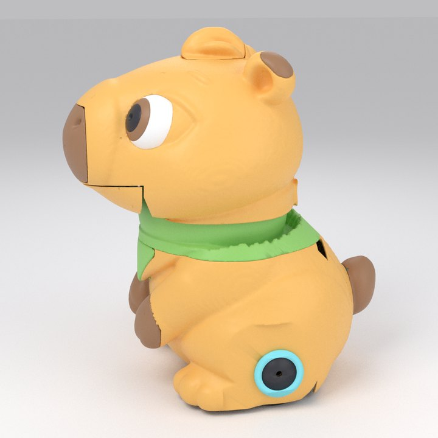
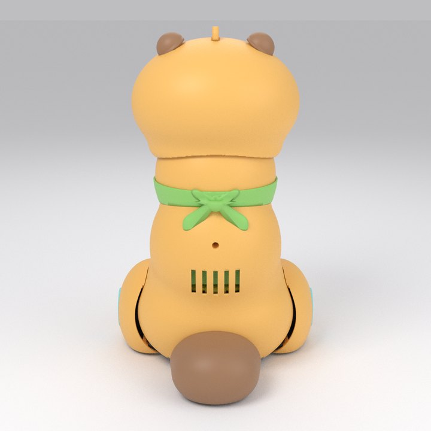
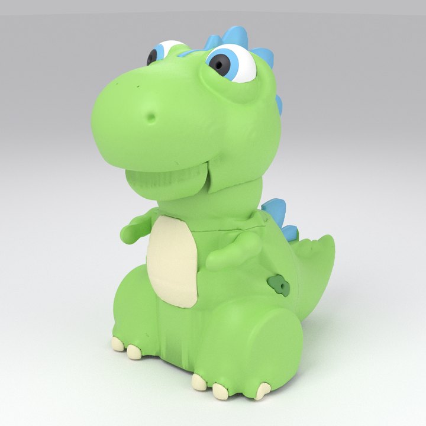
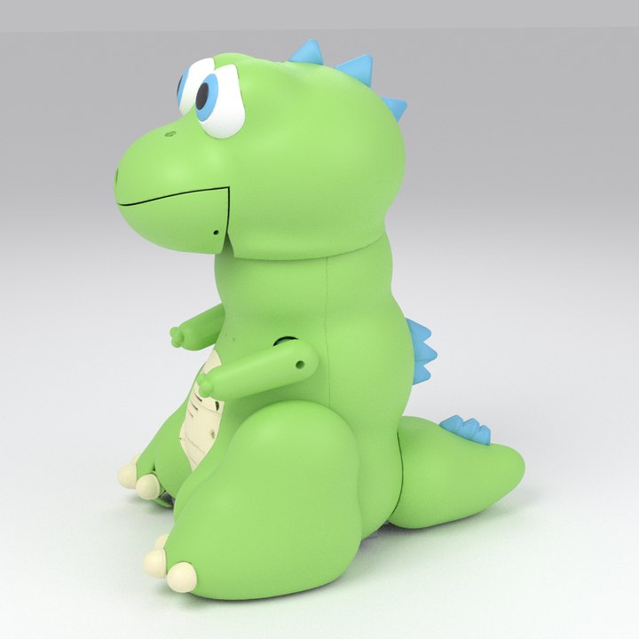

Did the robot become more like the drawing? See each view, with a number
You choose a robot by how it looks. But between the drawing and the printed part come the motor, battery, and screw, and the little guy may turn out quite different from what you saw: in the first version, the capybara came out with a long neck. Here you can see the capybara and the dinosaur before and after, alongside the reference drawing, and learn to read the ruler that measures how closely they match.
The capybara in three-quarter view, from the same camera. These are model renders, not photos: nothing has been printed yet.
In brief
The two creatures in robos-impressos started from a reference drawing. In version 1.0.2, the shell was drawn with simple rounded shapes over a skeleton shared by both, and the result looked far from the drawing. In version 1.1.2, the shape began to come from a 3D mesh generated on the computer from the drawing itself, and each creature’s skeleton was redesigned to fit inside it. To find out whether it really improved, and not just by eye, the project measures the robot’s outline against the drawing’s outline, view by view. The capybara went from 0.777 to 0.920, and the dinosaur from 0.814 to 0.872, on a scale from 0 to 1. This page shows the images, the numbers, and what the number cannot see.
The robot images are renders: computer images made from the print files. The reference drawing is an illustration and appears here only for comparison. The other robots and their individual pages are in the general robots guide.
How to read the number
IoU: how much one outline overlaps the other
IoU is short for "intersection over union." You place the robot’s silhouette over the drawing’s silhouette and divide the area they share by the area they occupy together.
only in the reference drawing only in the robot in both
IoU = green ÷ (green + red + blue)
The scale goes from 0 to 1
At 1, the two outlines are identical. At 0, they do not touch at all. On this page, 0.777 is the long-necked capybara, and 0.920 is the capybara whose differences remain along the edge and the bandana bow.
What the ruler sees
Only the outline, from four views. Before comparing, both silhouettes are set to the same height, their bases are placed on the same line, and their centers are aligned. The robot’s actual size is not part of the calculation.
What the ruler doesn't see
Color, eyes, mouth, seams, holes, and everything inside the outline. Two robots that look very different from the front can have the same number. That is why the images are here: the number confirms what your eye sees; it does not replace it.
It's a thick ruler
The exact camera used in the drawing is unknown. So the ruler starts from a chosen angle for each view, tests nearby angles (up to 25° on either side, in steps of 5°), and keeps the best one. This accounts for a camera mismatch, but it can also hide small differences. One or two thousandths are noise; you can see a large difference in the images.
The ceiling
It’s the raw 3D mesh, generated on the computer from the drawing and measured with the same ruler. It doesn’t even reach 1: the capybara’s score is 0.926 and the dinosaur’s is 0.897. The robot still has wheels, cutouts, and gaps: as a rule, it stays below the ceiling.
The target
It was set before measuring the result, so no one could choose the target after seeing the outcome: halfway between the before and the ceiling. This rule applies to the average across the four views. The target for each view, shown in the tables, is the same calculation applied to that view.
🦫 Capybara
Capybara: from a long neck to a compact pear shape
The drawing is a pear: a wide body below, with the head attached to it and no neck. The old skeleton did not allow that.
0.777before (v1.0.2), average across views
0.920after (v1.1.2)
0.926ceiling: the raw mesh from the drawing
0.852target: halfway between them
Target reached. The robot covered 96 % of the distance between before and the ceiling.
The reference drawing
It's the illustration the robot was based on, shown in four views. The ruler compares the robot with each one.
Project reference illustration. Not a photo or render.
Before and after, in the same views
Model renders, from the same camera, side by side. The IoU for each view is below its image.
front
before · IoU 0.783after · IoU 0.944
three-quarter
before · IoU 0.784after · IoU 0.908
side
before · IoU 0.736

after · IoU 0.906
back

before · IoU 0.803after · IoU 0.925
The numbers, view by view
↔ on your phone, drag the table sideways
View
Before (v1.0.2)
After (v1.1.2)
Ceiling
Target
Gain
front
0.783
0.944
0.943
0.863
+0.161
three-quarter
0.784
0.908
0.911
0.848
+0.124
side
0.736
0.906
0.925
0.831
+0.170
back
0.803
0.925
0.927
0.865
+0.122
average
0.777
0.920
0.926
0.852
+0.143
View where the robot scores slightly above the ceiling: front. The difference is in the thousandths and falls within the ruler's noise, since it picks the best neighboring angle for each model.
The ruler, side by side
This is the image saved by the measurement program. Each row is a view: the reference drawing on the left, the model in the camera view selected by the ruler in the middle, and the two silhouettes overlaid on the right. Red is what only the drawing has, blue is what only the robot has, and green is what they share.
Tap the image to enlarge. The text inside these images is in Portuguese. In the middle model, the ruler paints the wheels over the shell; on the robot, they are hidden. The "adjusted" value is a second measurement with a small allowance for scale and position: the tables on this page use IoU without adjustment. The average written in the image title may differ from the table by 1 thousandth due to rounding.
What changed inside, and why
The shape comes from the drawing
Before, the shell was drawn with simple rounded shapes. Now a 3D mesh generated from the drawing has become the robot's skin: the shell is this skin with 2.4 mm walls, cut into pieces.
A low skeleton, just for her
In the old skeleton, shared by both animals, the neck joint was 185 mm above the floor: that is why the neck was long. In the new one, it was lowered to 150 mm, with the servo that turns the head lying on its side.
Support at the front
The head is large and sits at the front, and the weight went with it: the center of mass falls in front of the wheel axis. The support ball, which used to be a single one at the back, became two at the front, under the paws.
Shell printed in vases
The torso in two halves, with separate legs and rear, gave way to three large pieces: the whole body, rear door, and collar. Each has a flat base on the build plate and walls that rise close to vertical, so it prints with almost no supports. The collar is the green bandana itself.
What still separates the capybara from the drawing: the bandana knot at the back of the neck, which was left out because the head, when tilted upward, passes through its spot, and the flat facet left there. The shopping list, files, and assembly instructions are on the capybara page.
🦖 Dinosaur
Dinosaur: legs at the front, tail at the back, and wheels inside the thighs
The dinosaur already started closer to the drawing, and its mesh has a lower ceiling: there was less room left to walk.
0.814before (v1.0.2), average across views
0.872after (v1.1.2)
0.897ceiling: the raw mesh from the drawing
0.855target: halfway between them
Target reached. The robot covered 70 % of the distance between before and the ceiling.
The reference drawing
It's the illustration the robot was based on, shown in four views. The ruler compares the robot with each one.
Project reference illustration. Not a photo or render.
Before and after, in the same views
Model renders, from the same camera, side by side. The IoU for each view is below its image.
front
before · IoU 0.875after · IoU 0.910
three-quarter (a)
before · IoU 0.808

after · IoU 0.874
three-quarter (b)
before · IoU 0.787after · IoU 0.862
side

before · IoU 0.786after · IoU 0.842
The numbers, view by view
↔ on your phone, drag the table sideways
View
Before (v1.0.2)
After (v1.1.2)
Ceiling
Target
Gain
front
0.875
0.910
0.942
0.908
+0.035
three-quarter (a)
0.808
0.874
0.888
0.848
+0.066
three-quarter (b)
0.787
0.862
0.889
0.838
+0.075
side
0.786
0.842
0.870
0.828
+0.056
average
0.814
0.872
0.897
0.855
+0.058
The ruler, side by side
This is the image saved by the measurement program. Each row is a view: the reference drawing on the left, the model in the camera view selected by the ruler in the middle, and the two silhouettes overlaid on the right. Red is what only the drawing has, blue is what only the robot has, and green is what they share.
Tap the image to enlarge. The text inside these images is in Portuguese. In the middle model, the ruler paints the wheels over the shell; on the robot, they are hidden. The "adjusted" value is a second measurement with a small allowance for scale and position: the tables on this page use IoU without adjustment. The average written in the image title may differ from the table by 1 thousandth due to rounding.
What changed inside, and why
The shape comes from the drawing
As with the capybara, the shell is no longer drawn with simple shapes: it is the skin of the 3D mesh generated from the drawing, with 2.4 mm walls, cut into pieces.
A skeleton just for him, with the wheels inside the thighs
In the new shape, the legs are at the front and the tail at the back. The wheel axis passes through the thighs, and the shell covers the wheels. With the capybara's skeleton, the dinosaur would tip backward.
Support at the back and a shorter neck
The center of mass is behind the wheel axis, so the support ball is at the back, under the base of the tail. The neck joint was lowered from 185 to 164 mm above the floor, so the neck would be short like in the drawing.
Shell printed in vases and an almost straight mouth
The body, back, and collar print upright, with the flat edge on the build plate, instead of the torso in two halves. The mesh had an open mouth: the gap was closed, and the mouth opens 12°. The jaw sits flush against the neck sphere, and each extra degree would make the chin move back against it.
What still separates the dinosaur from the mesh: the closed mouth, the straight band between the legs, and the smooth arms. The shopping list, files, and assembly instructions are on the dinosaur page.
Method
How the measurement works
The protocol is the same for the before, after, and mesh. If the ruler changed midway, the numbers would not be comparable.
Each drawing view becomes a silhouette: the character cut out from the background.
The model is drawn without perspective, using only the printed parts, wheels, and support ball, in the neutral pose and without the phase 2 components.
Both silhouettes have the same height (400 pixels), their bases on the same line, and their centers aligned.
The ruler starts at the agreed angle for the view, tests nearby angles (25° in either direction, in 5° increments, and five camera heights), and keeps the highest IoU.
Each creature's number is the simple average of its views.
Dinosaur: the target is 0.855. The calculation uses the unrounded values (0.8137 and 0.8972). Using the already rounded numbers from the tables (0.814 and 0.897), it would give 0.856: the difference is only due to rounding.
The numbers come from comparacao/semelhanca.json, saved by the program comum/cad/comparar.py. The full table, with the chosen angle for each view, is at comparacao/semelhanca.md (in Portuguese).
To repeat the measurement, the reference images are needed. They are not part of the repository: only the ones shown on this page have been published.
The other two robots
The square robots have a score, but not this story
The square desktop robot was measured in just one view and had no mesh: it came in at 0.797 (it was 0.755), below the target of 0.855. The square robot on wheels is new and has no drawing of its own. The number and explanation are on each one's page.
 before (v1.0.2)
before (v1.0.2)